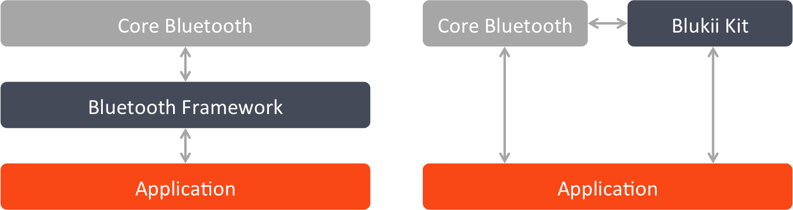

The blukii Kit provides the modules and mechanism needed for your iOS or Mac application to communicate with blukiis.
blukiis are wearable device with several built-in sensors.
They provide access to these sensors and their recorded values by using the Genereic Attribute Profile (GATT) of the Bluetooth low energy wireless technology.
For more information about blukiis visit blukii.com.
At a Glance
blukii Kit is completly written in Swift, Apples new programming language.
blukii Kit aims at giving developers the opportunity to let their applications interact with the powerful features of blukiis.
Using modern language features like closures and tuples, blukii Kit provides an approach to achieve that goal with less code and without the need of worrying about concurrency.
Architecture and Differences Between Other Frameworks
While most other Bluetooth frameworks, providing access to third party hardware, act as a middleware between the operationg system's Bluetooth API and the application, blukii Kit is designed to work alongside with that API and not on top of it.
That means blukii Kit is not veiling the original API of the operating system, giving you as an application developer the possibility to still access low-level features when you need them. Figure 1.1 shows this architecture compared to the common one.
Figure 1.1 Comparison between blukii Kit's architecture and the common one

Due to blukiis communicate using Bluetooth 4.0 LE, blukii Kit is designed to work hand in hand with Apples Core Bluetooth framework. This is a handy framework that provides among others a simple API to discover Bluetooth 4.0 LE device, handling connection to them as a central and to perform GATT operations on them.
As mentioned before you can still access this lower-level API, working with blukii Kit if you need to.
But for most operations you want to perform with blukiis you can delegate the Bluetooth related logic to blukii Kit.
You simply give your peripheral (your blukii) to blukii Kit and tell it what you want to do with it.
blukii Kit will perform the appropriate GATT operations on the given perhiperal and will return the result in a high-level and easy to interpret representation to you.
You can also let blukii Kit interpret GATT callbacks you do not want to handle in your application, for you in a mixed-level application.
Using blukii Kit in a Standard Application
In most of your appplications you will want to work with blukii devices on a high level.
For example imagine an application, which uses the blukii's temperature and humidity sensors to react on climatic changes or an application that reads out the steps recorded by a blukii.
In applications like this the only thing you need to touch Core Bluetooth for is the discovery of potential blukii devices and to establish a connection to identified blukiis, as illustrated in Figure 1.2.
All other GATT based communication between your application and the blukii device can be delegated to blukii Kit, so in standard applications you will let blukii Kit receive all GATT callbacks after setting up the connection to the blukii(s).
Figure 1.2 Bluetooth interaction in Standard high-level applications
Building Long-Term Applications and Accessing Low-Level Functions Beside blukii Kit
In some applications you may want to use features, provided by Core Bluetooth, which have nothing to do with the specific functionality of a blukii device, beside blukii specific functions.
For example imagine an application that uses the Switch profile of a blukii to turn some functionality of your app on or off.
But to avoid a lost blukii device granting access to your device's settings to a stranger you periodically check the current Received Signal Strength Indicator (RSSI) value of the blukii.
Only if the latest RSSI value is lower than a certain threshold, indicating the blukii device is really close to your device, your application should react on the change of the switch state of the blukii.
While reading the current switch state of a blukii and setting up a handler routine on changes of the value is provided by blukii Kit, the update of the RSSI value is a low-level functionality, that Core Bluetooth is responsible for.
As mentioned in Using blukii Kit in a Standard Application you will let blukii Kit receive all GATT callbacks in a standard application.
The problem is that blukii Kit does not know how to handle your RSSI update callback and will therefore ignore it.
So in applications in, which you want to use low-level features in, you will need to change the pattern a little bit.
Instead of letting blukii Kit receive all GATT callbacks your application needs to become the receiver for all of these callbacks.
You then check what callbacks your application is responsible for and handle them.
When you receive a callback, that you cannot handle, you can forward it to blukii Kit, which will then try to handle it.
In this process, illustrated in Figure 1.3, it is very important that you forward all callbacks, intended to be handled by blukii Kit, to blukii Kit in the correct order.
Figure 1.3 Accessing low-level Bluetooth functionality beside blukii Kit
Another typical scenario where you need to access Core Bluetooth beside blukii Kit, is a long-term application that should also handle Bluetooth events when it is in the background mode or got suspended by the operating system.
In iOS 7 Apple adapted the State Preservation and Restoration, known from UIKit, to Core Bluetooth.
With that new feature you can now delegate your Bluetooth role (central or peripheral) to iOS, when your application gets suspended.
From then your application will be launched into the background mode when a relevant event occurs.
This event will then be forwared to your app where you can try to handle it or forward it to blukii Kit.
How to Use This Document
This Programming Guide is not designed do be a full API documentation for the whole functionality provided by blukii Kit.
Rather, it is mentioned to be an guided introduction into the fundamental concepts and shall give you an idea of how you efficiently design applications witht blukii Kit.
See Also
If you have never used the Core Bluetooth framework or if you are unfamiliar with basic Bluetooth low energy concepts, you should also take a look at Apple's Core Bluetooth Programmin Guide.